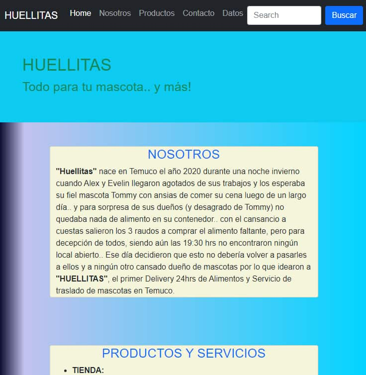
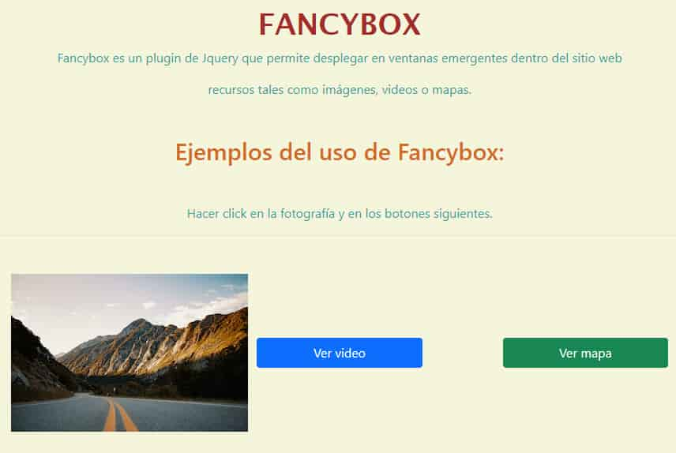
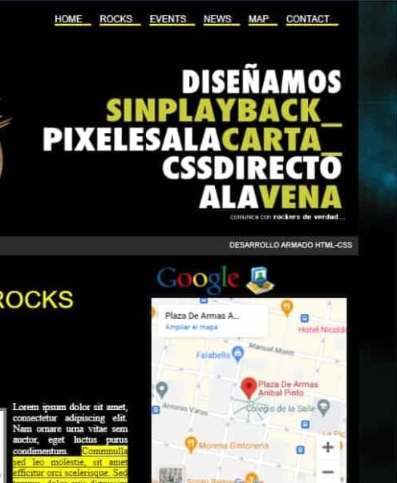

Tu mensaje ha sido enviado con éxito, serás contactado a la brevedad, muchas gracias!
Hola, Soy Evelin
Desarrolladora Web Trainee
¿Tienes un proyecto digital en mente y no sabes cómo materializarlo? ¿Buscas asesoría para el desarrollo, implementación y mantención de tu página web? Si tu respuesta es SI ... entonces yo te ayudo!..
Conversemos !!!
A cerca de Mi
Mi nombre es Evelin García Santander, soy Contador Auditor de profesión, Corredora de Propiedades y
desde hace un par de años una entusiasta aprendiz en el mundo del Desarrollo y la Programación.
Poseo una certificación en Emprendimiento Digital con Tecnologías Web, que me entregó herramientas
para
poder tomar una idea de negocio y materializarla en un producto digital viable; asi como también
competencias en lenguajes de programación y sus correspondientes frameworks, tanto Front como
Backend.
Mi meta es convertirme en un real aporte para el área y para la organización que
confíe
en mi abanico de conocimientos y crecientes nuevas capacidades y habilidades.
Competencias
Desarrollador Frontend
Desarrollo de páginas web responsivas, con utilización de lenguajes HTML, CSS y Javascript, además de frameworks y librerías como Bootstrap y JQuery.
Desarrollador Backend
Diseño y desarrollo de aplicaciones y soluciones web con lenguajes de programación Python, Javascript y Ruby, utilizando frameworks como Django y Ruby on Rails.
Habilidades
* Conocimientos de Bases de Datos Relacionales PostgreSql
* Manejo de herramientas de control de versiones Git y plataforma Github
* Certificación en Emprendimiento Digital con Tecnologías Web
Proyectos

Huellitas
Página web creada para una tienda de comercialización de productos para mascotas; incluye reseña del emprendimiento, productos ofrecidos, mapa de ubicación, carrusel de imágenes, sección de contacto y de datos útiles.
Resumen Proyecto
Fuente:PexelsLicencia:Creative Commons Atribución 4.0 Internacional
Fancybox
Ejemplo de uso del pluggin de Jquery Fancybox, que nos permite colocar una imagen y mapa en pantalla completa además de reproducir videos.
Resumen Proyecto

Mockup página web
Diseño simple creado para mostrar componentes utilizables en una página web, tales como barras de navegación, destacados, inserción de imagenes, videos y mapas además de elementos de interacción.
Resumen Proyecto
Reloj fin de año
Aplicación creada con uso de html, css y javascript con la finalidad de mostrar un contador que muestre el tiempo restante en días, horas, minutos y segundos para la llegada de fin de año.
Resumen Proyecto